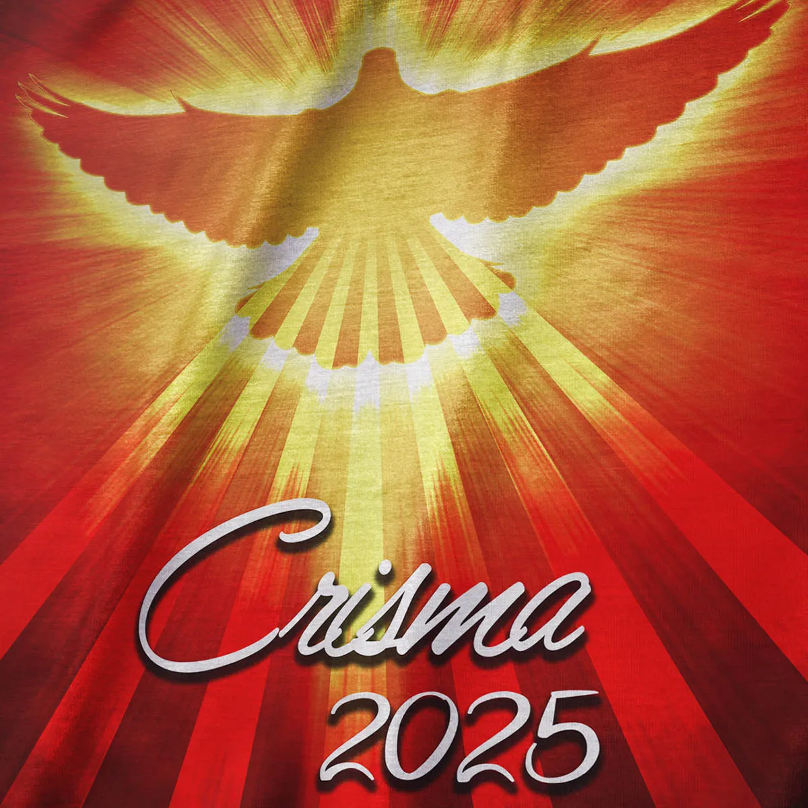
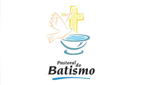
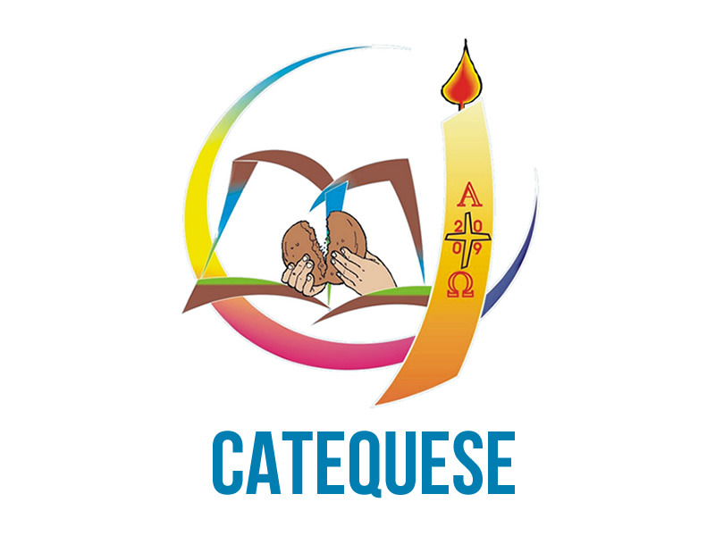

Nossa Senhora do Monte Claro é um título dedicado à Virgem Maria, que simboliza proteção, esperança e luz para os fiéis. Assim como o monte que se destaca na paisagem, ela é vista como guia espiritual, uma presença elevada que intercede junto a Deus em favor de seus filhos. A devoção a Nossa Senhora do Monte Claro carrega um profundo significado de fé, amor e acolhimento. Nossa igreja é um espaço de oração, encontro e fortalecimento espiritual, onde todos são bem-vindos para celebrar, agradecer e renovar sua esperança sob o olhar amoroso de Maria.

Todas as quintas na igreja. Para mais informações sobre inscrição entre em contato com
(47) 3455-5072

Informações sobre curso de padrinhos para batismo entre em contato com a secretaria no número (47) 3455-5072

Todas as quartas-feiras aulas de catequese, para saber mais sobre incrições entre em contato com o número (47) 3455-5072
Contribua financeiramente para apoiar nossas atividades e projetos. Entre em contato com a secretaria para mais informações.
Doe alimentos, roupas ou outros itens que possam ajudar nossa comunidade. Podem ser doados na secretaria da Igreja durante horário comercial
Ofereça seu tempo e habilidades para ajudar em nossas atividades e eventos. Para saber mais como ajudar a comunidade, entre com contato com a secretaria ou nossos coordenadores
| Dom | Seg | Ter | Qua | Qui | Sex | Sáb |
|---|